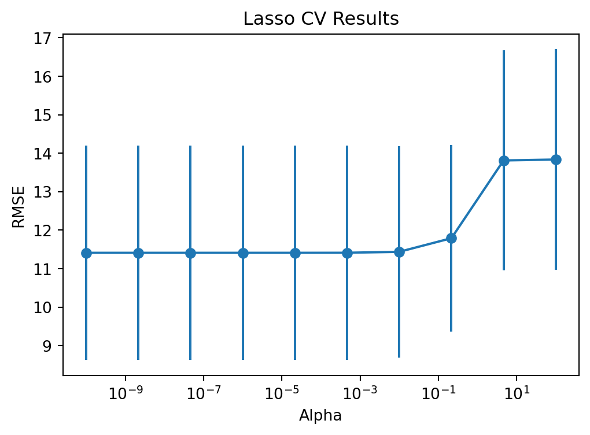

import pandas as pd
import numpy as np
import matplotlib.pyplot as plt
from sklearn.model_selection import train_test_split, KFold, GridSearchCV
from sklearn.linear_model import LinearRegression, Ridge, Lasso
from sklearn.preprocessing import StandardScaler, OneHotEncoder
from sklearn.compose import ColumnTransformer
from sklearn.pipeline import Pipeline
from itables import show
import warnings
warnings.filterwarnings('ignore')
np.random.seed(4025)MATH 4025: Regularization & Model Tuning
Eric Friedlander
Computational Set-Up
Data: Candy
The data for this lecture comes from the article FiveThirtyEight The Ultimate Halloween Candy Power Ranking.
candy_url = "https://raw.githubusercontent.com/fivethirtyeight/data/master/candy-power-ranking/candy-data.csv"
candy_rankings = pd.read_csv(candy_url)
candy_rankings_clean = candy_rankings.drop(columns=['competitorname']).copy()
# Convert probabilities into percentages
candy_rankings_clean['sugarpercent'] = candy_rankings_clean['sugarpercent'] * 100
candy_rankings_clean['pricepercent'] = candy_rankings_clean['pricepercent'] * 100
bool_cols = ['chocolate', 'fruity', 'caramel', 'peanutyalmondy', 'nougat',
'crispedricewafer', 'hard', 'bar', 'pluribus']
candy_rankings_clean[bool_cols] = candy_rankings_clean[bool_cols].astype(str)
stratify_bins = pd.qcut(candy_rankings_clean['winpercent'], q=4, labels=False)
candy_train, candy_test = train_test_split(candy_rankings_clean,
test_size=0.25,
stratify=stratify_bins,
random_state=4025)Model Tuning
Tuning Parameters
- Tuning Parameters or Hyperparameters are parameters that cannot (or should not) be estimated when a model is being trained
- These parameters control something about the learning process and changing them will result in a different model when fit to the full training data (i.e. after cross-validation)
- Frequently: tuning parameters control model complexity
- Example: \(\lambda\) (or \(\alpha\) in Python) in LASSO and Ridge regression
- Today: How to choose our tuning parameters?
Question
- Which of the following are tuning parameters:
- \(\beta_0\): the intercept of linear regression
- \(k\) in KNN
- step size in gradient descent
- The number of folds in cross-validation
- Type of distance to use in KNN (i.e. rectangular vs. Gower’s vs. weighted etc)
Basic Idea
- Use CV to try out a bunch of different tuning parameters and choose the “best” one
- How do we choose which tuning parameters to try?
- Two general approaches:
- Grid Search
- Iterative Search
Grid Search
Grid Search
- Create a grid of tuning parameters and try out each combination
- Types of grids:
- Regular Grid: tuning parameter values are spaced deterministically using a linear or logarithmic scale and all combinations of parameters are used (mostly what you want to use in this class)
- Irregular Grids: tuning parameter values are chosen stochastically
- Use when you have A LOT of parameters
Grid Search in Python
- Take advantage of
GridSearchCVinsidesklearn.model_selection. - You provide:
- Your pipeline
- A dictionary of parameters ending with a list of values to search (e.g.
{'model__alpha': [0.1, 1.0, 10.0]}) - A cross-validation strategy (e.g.
KFold)
# Let's set up our Pipeline again
X_train = candy_train.drop(columns=['winpercent'])
y_train = candy_train['winpercent']
num_vars = X_train.select_dtypes(include=['float64', 'int64']).columns.tolist()
cat_vars = X_train.select_dtypes(include=['object', 'category']).columns.tolist()
preproc = ColumnTransformer([
('num', StandardScaler(), num_vars),
('cat', OneHotEncoder(drop='first', sparse_output=False), cat_vars)
])
ridge_pipe = Pipeline([('preproc', preproc), ('model', Ridge())])
lasso_pipe = Pipeline([('preproc', preproc), ('model', Lasso())])Define the Grids
Define the Cross-Validation
Regular Grid Search in Python
We pass the pipeline and parameter grid into GridSearchCV:
ridge_grid = GridSearchCV(estimator=ridge_pipe,
param_grid=param_grid,
cv=candy_folds,
scoring='neg_root_mean_squared_error',
return_train_score=True)
lasso_grid = GridSearchCV(estimator=lasso_pipe,
param_grid=param_grid,
cv=candy_folds,
scoring='neg_root_mean_squared_error',
return_train_score=True)
# Ignore convergence warnings for low alpha lassos
with warnings.catch_warnings():
warnings.simplefilter("ignore")
ridge_grid.fit(X_train, y_train)
lasso_grid.fit(X_train, y_train)Inspecting Results
The cv_results_ attribute returns a dictionary of information that we can put right into a DataFrame:
ridge_results = pd.DataFrame(ridge_grid.cv_results_)
# We flip the score to be positive RMSE instead of negative RMSE
ridge_results['mean_test_rmse'] = -ridge_results['mean_test_score']
ridge_results['std_test_rmse'] = ridge_results['std_test_score']
lasso_results = pd.DataFrame(lasso_grid.cv_results_)
lasso_results['mean_test_rmse'] = -lasso_results['mean_test_score']Visualizing Results: Ridge
Selecting Best Model: Ridge
By default, GridSearchCV automatically finds and stores the best parameters inside .best_params_.
We can also inspect what its RMSE was:
Visualizing Results: LASSO
fig, ax = plt.subplots(figsize=(6, 4))
ax.errorbar(lasso_results['param_model__alpha'], lasso_results['mean_test_rmse'],
yerr=lasso_grid.cv_results_['std_test_score'], marker='o')
ax.set_xscale('log')
ax.set_xlabel('Alpha')
ax.set_ylabel('RMSE')
ax.set_title('Lasso CV Results')
plt.show()
Selecting Best Model: LASSO
Finalize Model
One amazing feature of GridSearchCV is refit=True (on by default). Under the hood, once the grid search is finished, it automatically refits the single best performing model configuration on the entire training data.
You can predict directly via the grid search object:
Using Parsimony as a Tie-Breaker
- Good heuristic: One-Standard Error Rule
- Use resampling to estimate error metrics
- Compute standard error for error metrics
- Select most parsimonious model that is within one standard error of the best performance metric
Calculating One-Standard Error: Ridge
We need custom code for this in scikit-learn. We want the model with the largest \(\alpha\) (highest penalty -> most parsimonious) whose error is no more than the lowest error + 1 standard error of the lowest error.
# 1. Identify the index of the absolute minimum RMSE
best_idx = ridge_results['mean_test_score'].argmax()
# 2. Get the RMSE and the std error bounding the best model
# Ensure we divide standard deviation by sqrt(folds) to get standard error!
import math
best_rmse = -ridge_results.loc[best_idx, 'mean_test_score']
best_se = ridge_results.loc[best_idx, 'std_test_score'] / math.sqrt(candy_folds.n_splits)
# 3. Threshold we are willing to tolerate
threshold = best_rmse + best_se
print(f"Best RMSE: {best_rmse:.3f}, Threshold: {threshold:.3f}")
# 4. Filter for alphas where RMSE <= Threshold
candidates = ridge_results[ridge_results['mean_test_rmse'] <= threshold]
# 5. Pick the most parsimonious (largest alpha)
optimal_alpha_se = candidates['param_model__alpha'].max()
print(f"Optimal Alpha (1-SE Rule): {optimal_alpha_se}")Best RMSE: 11.371, Threshold: 12.572
Optimal Alpha (1-SE Rule): 4.641588833612772Using the Test Set as a Tie Breaker
- Once you’ve found you “best” candidate from several different classes of model, it’s ok to compare on test set
- In this case, we have our best ridge and our best lasso model
- Main thing to avoid… LOTS of comparisons on your test set
Using the Test Set as a Tie Breaker
from sklearn.metrics import root_mean_squared_error, r2_score
X_test = candy_test.drop(columns=['winpercent'])
y_test = candy_test['winpercent']
ridge_preds = ridge_grid.predict(X_test)
lasso_preds = lasso_grid.predict(X_test)
print(f"Ridge RMSE: {root_mean_squared_error(y_test, ridge_preds):.3f}")
print(f"Lasso RMSE: {root_mean_squared_error(y_test, lasso_preds):.3f}")
print(f"Ridge R2: {r2_score(y_test, ridge_preds):.3f}")
print(f"Lasso R2: {r2_score(y_test, lasso_preds):.3f}")Ridge RMSE: 13.765
Lasso RMSE: 14.120
Ridge R2: 0.279
Lasso R2: 0.241- Ridge Wins!
Good strategies
- First use coarse grid with large range to find general area
- Then use fine grid with small range to fine tune
- Use iterative method to fine tune
Iterative Methods (Bonus Content)
Brief Overview
- Basic Idea: iteratively select parameter values to choose based on how previous ones have done.
- Instead of blindly guessing every point (Grid Search), algorithm learns which parameters look most promising.
- Common Frameworks:
- Bayesian Search (using Gaussian Processes)
- Simulated Annealing
- Successive Halving
Bayesian Search: GP
- Assume performance metrics follow a Gaussian process
- Consider two sets of tuning parameters: \(x_1 = (\alpha_1, k_1)\) and \(x_2 = (\alpha_2, k_2)\)
- Let \(Y_1\) and \(Y_2\) be random variables representing the performance metric at these \(x\)’s
- Assume \(\text{Cov}(Y_1, Y_2)\) depends on how far apart \(x_1\) and \(x_2\)
- Covariance should decrease the further apart \(x_1\) and \(x_2\) are
Bayesian Search: Acquisition Function
- GP process gives us predicted mean and variance of performance metrics
- Imagine two scenario’s:
- 1: Predicted mean is slightly better than current parameter choice and variance is low
- Low-Risk, Low-Reward
- 2: Predicted mean is slightly worst than current parameter choice but variance is high
- High-Risk, High-Reward
- 1: Predicted mean is slightly better than current parameter choice and variance is low
- How do we balance?
- Two competing goals: Exploration (go toward high variance) and Exploitation (go toward best mean)
- Acquisition function: balances these two goals
Simulated Annealing
- Does anyone know what annealing is in Physics/Material Science?
- Start with initial parameter combination \(x_0\)(think gradient descent)
- Embark on random walk… in each step \(i\)
- Consider small perturbation from \(x_{i-1}\)… let’s call it \(x_{i-1}^{\epsilon}\)
- Get performance for \(x_{i-1}^\epsilon\)
- If performance is better set \(x_i = x_{i-1}^\epsilon\)
- If performance is worse set \(x_i = x_{i-1}^\epsilon\) with probability \(\exp(-c\times D_i\times i)\)
- \(c\) is user specified constant called cooling coefficient
- \(D_i\) percent difference between old and new
- Otherwise \(x_i = x_{i-1}\)
- Idea:
- start hot: likely to accept suboptimal parameter combinations and move around
- cools over time: decrease number sub-optimal acceptances
Iterative Methods in Python
- Standard
scikit-learndoes not natively include simulated annealing or bayesian search out of the box. - You must use widely adopted extensions:
scikit-optimizeforBayesSearchCV(Bayesian optimization)OptunaorHyperoptfor advanced Bayesian / Annealing workflows.
scikit-learndoes provideHalvingGridSearchCV, an iterative method that randomly samples configurations, evaluates them on small amounts of data, and “halves” the candidates repeatedly until only the best remains!